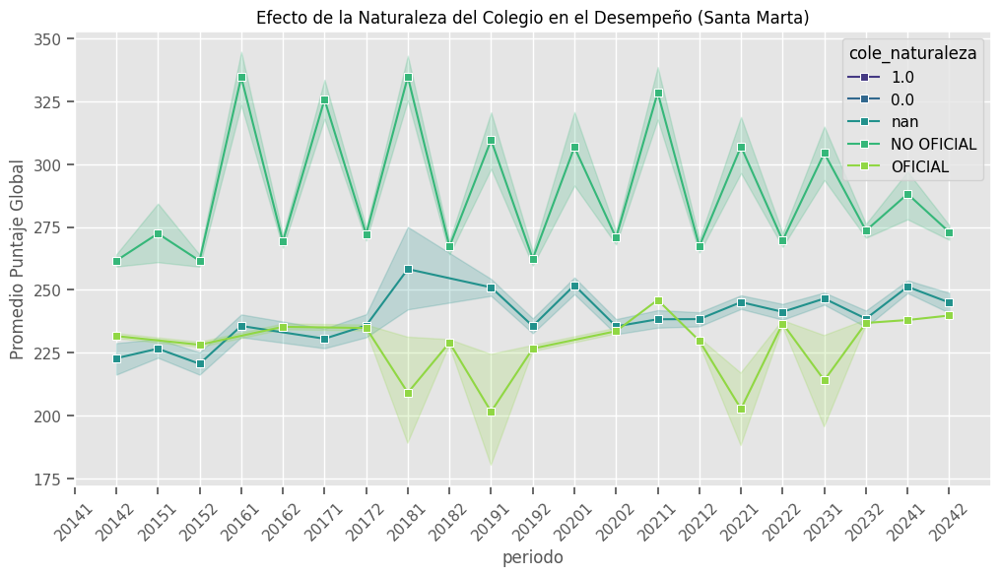
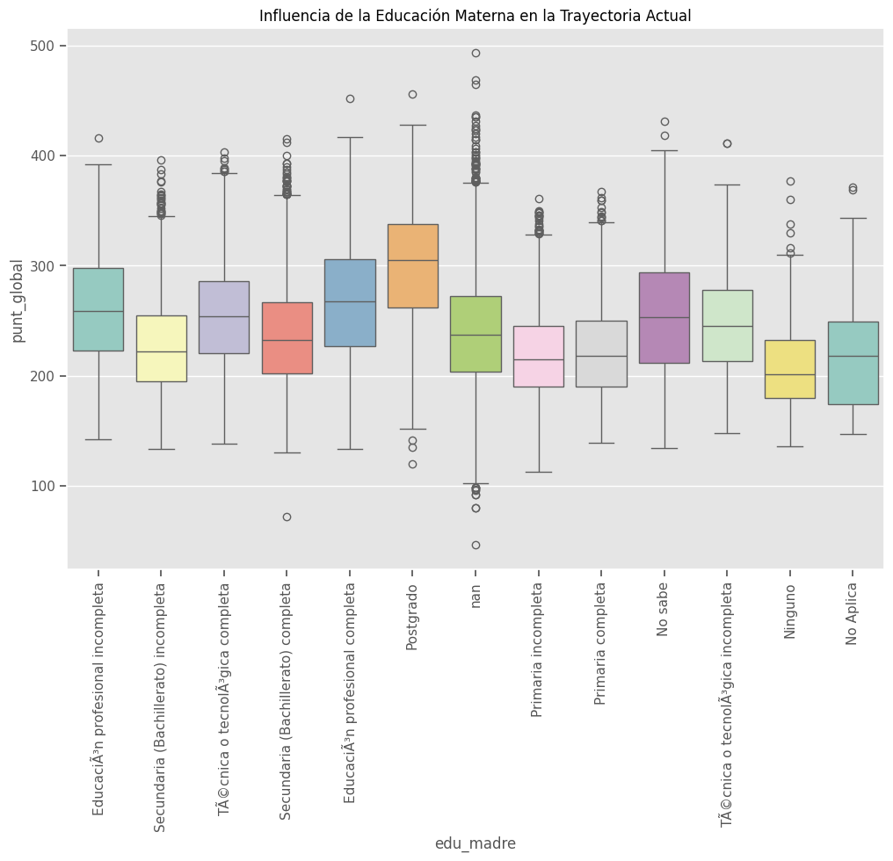
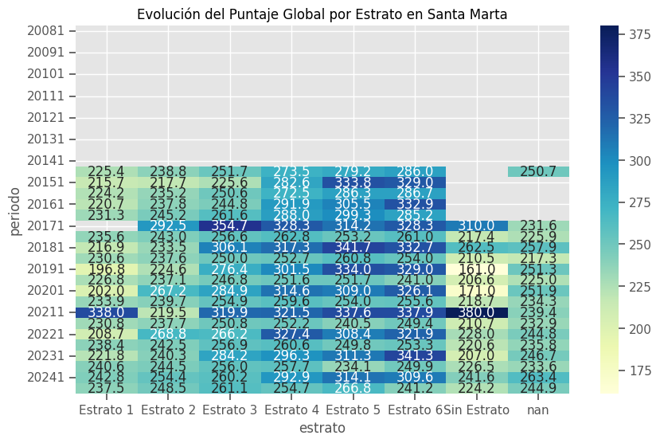
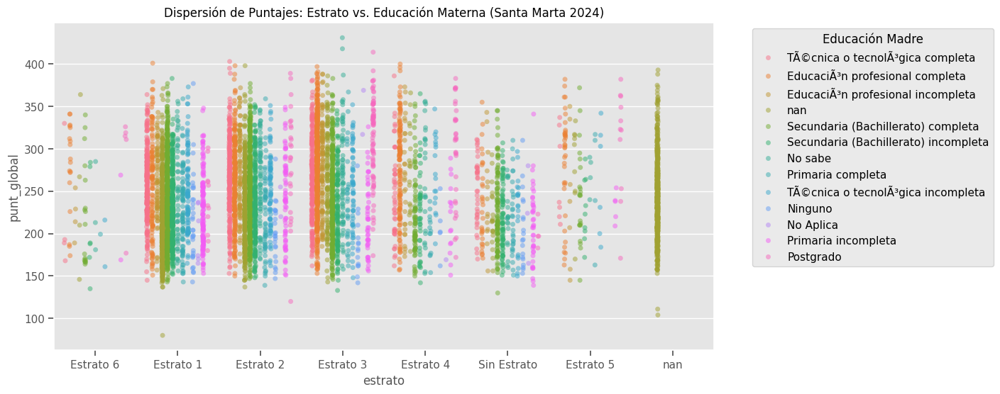
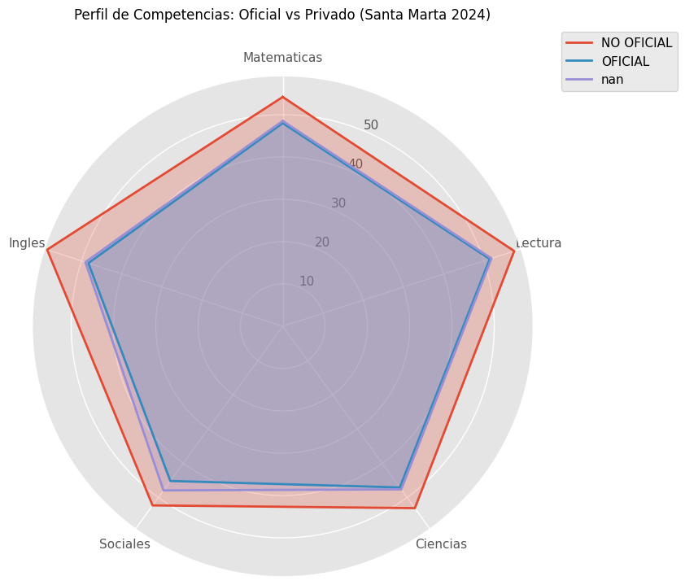

import pandas as pd
import os
from glob import glob
import gc
# Lee solo las primeras filas de un archivo para ver la estructura
muestra = pd.read_csv(
'Examen_Saber_11_20081.txt',
sep=';', # El ICFES suele usar este separador, verificar
nrows=5,
encoding='latin-1' # O 'utf-8', probar cuál funciona
)
print("Columnas:", muestra.columns.tolist())
print("\nPrimeras filas:")
print(muestra.head())
print("\nTipos de datos:")
print(muestra.dtypes)
Columnas: ['periodo', 'estu_consecutivo', 'estu_estudiante', 'cole_bilingue', 'cole_area_ubicacion', 'cole_calendario', 'cole_caracter_colegio', 'cole_cod_dane_establecimiento', 'cole_cod_depto_ubicacion', 'cole_cod_mcpio_ubicacion', 'cole_codigo_icfes', 'cole_genero', 'cole_inst_jornada', 'cole_naturaleza', 'cole_nombre_establecimiento', 'desemp_idioma', 'desemp_profundizacion', 'estu_ano_termino_bachill', 'estu_area_reside', 'estu_carrdeseada_razon', 'estu_cod_reside_mcpio', 'estu_depto_presentacion', 'estu_edad', 'estu_etnia', 'estu_fechanacimiento', 'estu_genero', 'estu_ies_cod_mpio_deseada', 'estu_ies_dept_deseada', 'estu_ies_deseada_nombre', 'estu_ies_mpio_deseada', 'estu_mcpio_presentacion', 'estu_mes_termino_bachill', 'estu_pais_reside', 'estu_puesto', 'estu_razoninstituto', 'estu_reside_depto', 'estu_reside_mcpio', 'estu_tipodocumento', 'estu_trabaja', 'estu_veces_estado', 'estu_zona_reside', 'fami_acueducto', 'fami_alcantarillado', 'fami_aseo', 'fami_automovil', 'fami_celular', 'fami_computador', 'fami_cuartos_hogar', 'fami_dormitorios_hogar', 'fami_dvd', 'fami_educa_hermano', 'fami_educacionmadre', 'fami_educacionpadre', 'fami_electricidad', 'fami_estrato_vivienda', 'fami_estufa', 'fami_hermanos_estudian', 'fami_horno', 'fami_ing_fmiliar_mensual', 'fami_internet', 'fami_lavadora', 'fami_microondas', 'fami_motocicleta', 'fami_nevera', 'fami_nivel_sisben', 'fami_num_hermanos', 'fami_ocupa_madre', 'fami_ocupa_padre', 'fami_pisos_hogar', 'fami_posicion_hermanos', 'fami_sanitario', 'fami_servicio_television', 'fami_sn_lee_escribe_madre', 'fami_sn_lee_escribe_padre', 'fami_telefono_fijo', 'fami_televisor', 'nombre_idioma', 'nombre_interdisciplinar', 'nombre_profundizacion', 'punt_biologia', 'punt_c_sociales', 'punt_filosofia', 'punt_fisica', 'punt_geografia', 'punt_historia', 'punt_ingles', 'punt_interdisciplinar', 'punt_lenguaje', 'punt_matematicas', 'punt_profundizacion', 'punt_quimica']
Primeras filas:
periodo estu_consecutivo estu_estudiante cole_bilingue \
0 20081 SB1120081008514223 ESTUDIANTE 1
1 20081 SB1120081006231529 ESTUDIANTE 1
2 20081 SB1120081006432976 ESTUDIANTE 1
3 20081 SB1120081008557162 ESTUDIANTE 1
4 20081 SB1120081008433531 ESTUDIANTE 1
cole_area_ubicacion cole_calendario cole_caracter_colegio \
0 U 2 ACADEMICO
1 U 2 ACADEMICO
2 U 2 ACADEMICO
3 U 2 ACADEMICO
4 U 2 ACADEMICO
cole_cod_dane_establecimiento cole_cod_depto_ubicacion \
0 305001003688 5
1 305001003688 5
2 305001003688 5
3 305001003688 5
4 305001003688 5
cole_cod_mcpio_ubicacion ... punt_filosofia punt_fisica punt_geografia \
0 5001 ... 62.450001 54.330002 61.689999
1 5001 ... 54.500000 59.290001 51.060001
2 5001 ... 59.930000 61.709999 49.060001
3 5001 ... 51.849998 61.709999 55.080002
4 5001 ... 37.830002 40.669998 51.060001
punt_historia punt_ingles punt_interdisciplinar punt_lenguaje \
0 61.689999 100.000000 55,48 70.860001
1 51.060001 79.550003 64,39 67.500000
2 49.060001 83.410004 69,41 64.949997
3 55.080002 91.709999 57,11 74.639999
4 51.060001 91.709999 48,31 44.389999
punt_matematicas punt_profundizacion punt_quimica
0 74.379997 7,03 56.099998
1 67.050003 6,66 42.380001
2 66.940002 6,06 54.200001
3 66.940002 5,78 57.889999
4 67.050003 4,84 45.740002
[5 rows x 91 columns]
Tipos de datos:
periodo int64
estu_consecutivo object
estu_estudiante object
cole_bilingue int64
cole_area_ubicacion object
...
punt_interdisciplinar object
punt_lenguaje float64
punt_matematicas float64
punt_profundizacion object
punt_quimica float64
Length: 91, dtype: object
# ============================================
# CONFIGURACION
# ============================================
CARPETA_DATOS = r'C:\Users\PC\Desktop\plan_decenal\icfes\bd_icfes' # Cambia esta ruta
ARCHIVO_SALIDA = 'icfes_saber11_consolidado.parquet'
CHUNK_SIZE = 100_000 # Filas por chunk (ajustar segun RAM disponible)
# Columnas con coma decimal que necesitan conversion
COLS_COMA_DECIMAL = ['punt_interdisciplinar', 'punt_profundizacion']
# ============================================
# FUNCION PARA LIMPIAR TIPOS DE DATOS
# ============================================
def limpiar_dataframe(df):
"""Convierte columnas con coma decimal y optimiza tipos"""
# Convertir comas decimales a puntos
for col in COLS_COMA_DECIMAL:
if col in df.columns:
df[col] = df[col].astype(str).str.replace(',', '.', regex=False)
df[col] = pd.to_numeric(df[col], errors='coerce')
# Optimizar tipos de datos para reducir memoria
for col in df.columns:
if df[col].dtype == 'object':
# Convertir a categoria si tiene pocos valores unicos
if df[col].nunique() < 50:
df[col] = df[col].astype('category')
elif df[col].dtype == 'float64':
df[col] = df[col].astype('float32')
elif df[col].dtype == 'int64':
df[col] = pd.to_numeric(df[col], downcast='integer')
return df
import pandas as pd
import os
from glob import glob
# ============================================
# CONFIGURACION
# ============================================
CARPETA_DATOS = r'C:\Users\PC\Desktop\plan_decenal\icfes\bd_icfes'
# ============================================
# DIAGNOSTICO DE ARCHIVOS
# ============================================
def diagnosticar_archivos():
patron = os.path.join(CARPETA_DATOS, 'Examen_Saber_11_*.txt')
archivos = sorted(glob(patron))
print("=" * 60)
print("DIAGNOSTICO DE ARCHIVOS ICFES")
print("=" * 60)
archivos_ok = []
archivos_error = []
for archivo in archivos:
nombre = os.path.basename(archivo)
print(f"\nAnalizando: {nombre}")
try:
df_full = pd.read_csv(
archivo,
sep=',',
encoding='latin-1',
low_memory=False
)
print(f" OK - Columnas: {len(df_full.columns)}, Filas: {len(df_full):,}")
archivos_ok.append({
'archivo': nombre,
'columnas': len(df_full.columns),
'filas': len(df_full)
})
except Exception as e:
print(f" ERROR: {str(e)[:150]}")
archivos_error.append({
'archivo': nombre,
'error': str(e)
})
print("\n" + "=" * 60)
print("RESUMEN")
print("=" * 60)
print(f"Archivos OK: {len(archivos_ok)}")
print(f"Archivos con ERROR: {len(archivos_error)}")
if archivos_error:
print("\n--- ARCHIVOS PROBLEMATICOS ---")
for item in archivos_error:
print(f"\n{item['archivo']}:")
print(f" {item['error'][:200]}")
return archivos_ok, archivos_error
# ============================================
# EJECUTAR
# ============================================
ok, errores = diagnosticar_archivos()
============================================================
DIAGNOSTICO DE ARCHIVOS ICFES
============================================================
Analizando: Examen_Saber_11_20081.txt
ERROR: Error tokenizing data. C error: Expected 4 fields in line 31270, saw 5
Analizando: Examen_Saber_11_20082.txt
ERROR: Error tokenizing data. C error: Expected 3 fields in line 3, saw 4
Analizando: Examen_Saber_11_20091.txt
ERROR: Error tokenizing data. C error: Expected 4 fields in line 6132, saw 5
Analizando: Examen_Saber_11_20092.txt
ERROR: Error tokenizing data. C error: Expected 1 fields in line 3, saw 4
Analizando: Examen_Saber_11_20101.txt
ERROR: Error tokenizing data. C error: Expected 4 fields in line 3, saw 5
Analizando: Examen_Saber_11_20102.txt
ERROR: Error tokenizing data. C error: Expected 3 fields in line 4, saw 5
Analizando: Examen_Saber_11_20111.txt
ERROR: Error tokenizing data. C error: Expected 5 fields in line 4, saw 6
Analizando: Examen_Saber_11_20112.txt
ERROR: Error tokenizing data. C error: Expected 2 fields in line 3, saw 4
Analizando: Examen_Saber_11_20121.txt
ERROR: Error tokenizing data. C error: Expected 5 fields in line 12, saw 7
Analizando: Examen_Saber_11_20122.txt
ERROR: Error tokenizing data. C error: Expected 5 fields in line 8, saw 6
Analizando: Examen_Saber_11_20131.txt
ERROR: Error tokenizing data. C error: Expected 2 fields in line 3, saw 5
Analizando: Examen_Saber_11_20132.txt
ERROR: Error tokenizing data. C error: Expected 2 fields in line 3, saw 9
Analizando: Examen_Saber_11_20141.txt
ERROR: Error tokenizing data. C error: Expected 5 fields in line 5, saw 8
Analizando: Examen_Saber_11_20142.txt
ERROR: Error tokenizing data. C error: Expected 1 fields in line 846, saw 2
Analizando: Examen_Saber_11_20151.txt
ERROR: Error tokenizing data. C error: Expected 1 fields in line 173, saw 2
Analizando: Examen_Saber_11_20152.txt
ERROR: Error tokenizing data. C error: Expected 1 fields in line 1251, saw 2
Analizando: Examen_Saber_11_20161.txt
ERROR: Error tokenizing data. C error: Expected 1 fields in line 96, saw 2
Analizando: Examen_Saber_11_20162.txt
ERROR: Error tokenizing data. C error: Expected 1 fields in line 3261, saw 2
Analizando: Examen_Saber_11_20171.txt
ERROR: Error tokenizing data. C error: Expected 6 fields in line 28, saw 8
Analizando: Examen_Saber_11_20172.txt
ERROR: Error tokenizing data. C error: Expected 1 fields in line 4, saw 2
Analizando: Examen_Saber_11_20181.txt
ERROR: Error tokenizing data. C error: Expected 2 fields in line 3, saw 5
Analizando: Examen_Saber_11_20182.txt
ERROR: Error tokenizing data. C error: Expected 3 fields in line 10, saw 4
Analizando: Examen_Saber_11_20191.txt
ERROR: Error tokenizing data. C error: Expected 6 fields in line 20, saw 7
Analizando: Examen_Saber_11_20192.txt
ERROR: Error tokenizing data. C error: Expected 6 fields in line 38, saw 8
Analizando: Examen_Saber_11_20201.txt
ERROR: Error tokenizing data. C error: Expected 5 fields in line 27, saw 6
Analizando: Examen_Saber_11_20202.txt
ERROR: Error tokenizing data. C error: Expected 1 fields in line 4, saw 5
Analizando: Examen_Saber_11_20211.txt
ERROR: Error tokenizing data. C error: Expected 4 fields in line 4, saw 5
Analizando: Examen_Saber_11_20212.txt
ERROR: Error tokenizing data. C error: Expected 4 fields in line 4, saw 7
Analizando: Examen_Saber_11_20221.txt
ERROR: Error tokenizing data. C error: Expected 4 fields in line 6, saw 5
Analizando: Examen_Saber_11_20222.txt
ERROR: Error tokenizing data. C error: Expected 3 fields in line 4, saw 5
Analizando: Examen_Saber_11_20231.txt
ERROR: Error tokenizing data. C error: Expected 2 fields in line 4, saw 3
Analizando: Examen_Saber_11_20232.txt
ERROR: Error tokenizing data. C error: Expected 3 fields in line 4, saw 5
Analizando: Examen_Saber_11_20241.txt
ERROR: Error tokenizing data. C error: Expected 5 fields in line 6, saw 7
Analizando: Examen_Saber_11_20242.txt
ERROR: Error tokenizing data. C error: Expected 1 fields in line 4, saw 3
============================================================
RESUMEN
============================================================
Archivos OK: 0
Archivos con ERROR: 34
--- ARCHIVOS PROBLEMATICOS ---
Examen_Saber_11_20081.txt:
Error tokenizing data. C error: Expected 4 fields in line 31270, saw 5
Examen_Saber_11_20082.txt:
Error tokenizing data. C error: Expected 3 fields in line 3, saw 4
Examen_Saber_11_20091.txt:
Error tokenizing data. C error: Expected 4 fields in line 6132, saw 5
Examen_Saber_11_20092.txt:
Error tokenizing data. C error: Expected 1 fields in line 3, saw 4
Examen_Saber_11_20101.txt:
Error tokenizing data. C error: Expected 4 fields in line 3, saw 5
Examen_Saber_11_20102.txt:
Error tokenizing data. C error: Expected 3 fields in line 4, saw 5
Examen_Saber_11_20111.txt:
Error tokenizing data. C error: Expected 5 fields in line 4, saw 6
Examen_Saber_11_20112.txt:
Error tokenizing data. C error: Expected 2 fields in line 3, saw 4
Examen_Saber_11_20121.txt:
Error tokenizing data. C error: Expected 5 fields in line 12, saw 7
Examen_Saber_11_20122.txt:
Error tokenizing data. C error: Expected 5 fields in line 8, saw 6
Examen_Saber_11_20131.txt:
Error tokenizing data. C error: Expected 2 fields in line 3, saw 5
Examen_Saber_11_20132.txt:
Error tokenizing data. C error: Expected 2 fields in line 3, saw 9
Examen_Saber_11_20141.txt:
Error tokenizing data. C error: Expected 5 fields in line 5, saw 8
Examen_Saber_11_20142.txt:
Error tokenizing data. C error: Expected 1 fields in line 846, saw 2
Examen_Saber_11_20151.txt:
Error tokenizing data. C error: Expected 1 fields in line 173, saw 2
Examen_Saber_11_20152.txt:
Error tokenizing data. C error: Expected 1 fields in line 1251, saw 2
Examen_Saber_11_20161.txt:
Error tokenizing data. C error: Expected 1 fields in line 96, saw 2
Examen_Saber_11_20162.txt:
Error tokenizing data. C error: Expected 1 fields in line 3261, saw 2
Examen_Saber_11_20171.txt:
Error tokenizing data. C error: Expected 6 fields in line 28, saw 8
Examen_Saber_11_20172.txt:
Error tokenizing data. C error: Expected 1 fields in line 4, saw 2
Examen_Saber_11_20181.txt:
Error tokenizing data. C error: Expected 2 fields in line 3, saw 5
Examen_Saber_11_20182.txt:
Error tokenizing data. C error: Expected 3 fields in line 10, saw 4
Examen_Saber_11_20191.txt:
Error tokenizing data. C error: Expected 6 fields in line 20, saw 7
Examen_Saber_11_20192.txt:
Error tokenizing data. C error: Expected 6 fields in line 38, saw 8
Examen_Saber_11_20201.txt:
Error tokenizing data. C error: Expected 5 fields in line 27, saw 6
Examen_Saber_11_20202.txt:
Error tokenizing data. C error: Expected 1 fields in line 4, saw 5
Examen_Saber_11_20211.txt:
Error tokenizing data. C error: Expected 4 fields in line 4, saw 5
Examen_Saber_11_20212.txt:
Error tokenizing data. C error: Expected 4 fields in line 4, saw 7
Examen_Saber_11_20221.txt:
Error tokenizing data. C error: Expected 4 fields in line 6, saw 5
Examen_Saber_11_20222.txt:
Error tokenizing data. C error: Expected 3 fields in line 4, saw 5
Examen_Saber_11_20231.txt:
Error tokenizing data. C error: Expected 2 fields in line 4, saw 3
Examen_Saber_11_20232.txt:
Error tokenizing data. C error: Expected 3 fields in line 4, saw 5
Examen_Saber_11_20241.txt:
Error tokenizing data. C error: Expected 5 fields in line 6, saw 7
Examen_Saber_11_20242.txt:
Error tokenizing data. C error: Expected 1 fields in line 4, saw 3
import os
CARPETA_DATOS = r'C:\Users\PC\Desktop\plan_decenal\icfes\bd_icfes'
# Analizar UN archivo para ver su estructura real
archivo = os.path.join(CARPETA_DATOS, 'Examen_Saber_11_20242.txt')
print("=" * 60)
print("ESTRUCTURA RAW DEL ARCHIVO")
print("=" * 60)
with open(archivo, 'r', encoding='latin-1') as f:
for i, linea in enumerate(f):
if i < 3: # Solo las primeras 3 lineas
print(f"\n--- LINEA {i} ---")
print(linea[:500]) # Primeros 500 caracteres
else:
break
# Detectar separador
print("\n" + "=" * 60)
print("CONTEO DE SEPARADORES EN LINEA 1 (HEADER)")
print("=" * 60)
with open(archivo, 'r', encoding='latin-1') as f:
header = f.readline()
separadores = {
'coma (,)': header.count(','),
'punto_coma (;)': header.count(';'),
'tabulador (\\t)': header.count('\t'),
'pipe (|)': header.count('|'),
'negacion (¬)': header.count('¬')
}
for sep, count in separadores.items():
print(f" {sep}: {count}")
print(f"\nSeparador mas probable: {max(separadores, key=separadores.get)}")
print(f"Numero de columnas esperadas: {max(separadores.values()) + 1}")
============================================================
ESTRUCTURA RAW DEL ARCHIVO
============================================================
--- LINEA 0 ---
periodo;estu_consecutivo;estu_estudiante;estu_tipodocumento;cole_area_ubicacion;cole_bilingue;cole_calendario;cole_caracter;cole_cod_dane_establecimiento;cole_cod_dane_sede;cole_cod_depto_ubicacion;cole_cod_mcpio_ubicacion;cole_codigo_icfes;cole_depto_ubicacion;cole_genero;cole_jornada;cole_mcpio_ubicacion;cole_naturaleza;cole_nombre_establecimiento;cole_nombre_sede;cole_sede_principal;desemp_c_naturales;desemp_ingles;desemp_lectura_critica;desemp_matematicas;desemp_sociales_ciudadanas;estu_agre
--- LINEA 1 ---
20242;SB11202437197718;ESTUDIANTE;;;;;;;;;;;;;;;;;;;3;A1;4;3;4;S;;;;;;;;;N;;;;;;;;;;;;;;;;;;;;;;;;;;;;;;;;;;;;;93;96;71;96;90;100;67;348;57;71;68;77
--- LINEA 2 ---
20242;SB11202430332788;ESTUDIANTE;TI;URBANO;;A;;311001110662;311001110662;11;11001;705970;BOGOTÃ;MIXTO;UNICA;BOGOTà D.C.;NO OFICIAL;LICEO CENTRAL AMERICAS;LICEO CENTRAL AMERICAS - SEDE PRINCIPAL;S;2;A-;2;2;2;S;11;11001;11;11001;;;BOGOTÃ;BOGOTÃ;N;;08/08/2006;F;11;0;;BOGOTà D.C.;BOGOTà D.C.;COLOMBIA;3;;COLOMBIA;N;0;;No;;;;Tres;;;Estrato 2;;3 a 4;Igual;No;Si;No;Si;;Si;Si;;Es vendedor o trabaja en atención al público;Es vendedor o trabaja en atención al público;26;31;33;35;37;30;43;227;45;
============================================================
CONTEO DE SEPARADORES EN LINEA 1 (HEADER)
============================================================
coma (,): 0
punto_coma (;): 83
tabulador (\t): 0
pipe (|): 0
negacion (¬): 0
Separador mas probable: punto_coma (;)
Numero de columnas esperadas: 84
import pandas as pd
import os
from glob import glob
# ============================================
# CONFIGURACION
# ============================================
CARPETA_DATOS = r'C:\Users\PC\Desktop\plan_decenal\icfes\bd_icfes'
# ============================================
# DIAGNOSTICO DE ARCHIVOS
# ============================================
def diagnosticar_archivos():
patron = os.path.join(CARPETA_DATOS, 'Examen_Saber_11_*.txt')
archivos = sorted(glob(patron))
print("=" * 60)
print("DIAGNOSTICO DE ARCHIVOS ICFES")
print("=" * 60)
archivos_ok = []
archivos_error = []
for archivo in archivos:
nombre = os.path.basename(archivo)
print(f"\nAnalizando: {nombre}")
try:
df_full = pd.read_csv(
archivo,
sep=';', # SEPARADOR CORRECTO
encoding='latin-1',
low_memory=False
)
print(f" OK - Columnas: {len(df_full.columns)}, Filas: {len(df_full):,}")
archivos_ok.append({
'archivo': nombre,
'columnas': len(df_full.columns),
'filas': len(df_full)
})
except Exception as e:
print(f" ERROR: {str(e)[:150]}")
archivos_error.append({
'archivo': nombre,
'error': str(e)
})
print("\n" + "=" * 60)
print("RESUMEN")
print("=" * 60)
print(f"Archivos OK: {len(archivos_ok)}")
print(f"Archivos con ERROR: {len(archivos_error)}")
if archivos_error:
print("\n--- ARCHIVOS PROBLEMATICOS ---")
for item in archivos_error:
print(f"\n{item['archivo']}:")
print(f" {item['error'][:200]}")
# Mostrar variacion de columnas
if archivos_ok:
columnas_set = set([a['columnas'] for a in archivos_ok])
print(f"\n--- VARIACION DE COLUMNAS ---")
print(f"Columnas encontradas: {columnas_set}")
if len(columnas_set) > 1:
print("\nDetalle por archivo:")
for a in archivos_ok:
print(f" {a['archivo']}: {a['columnas']} columnas")
return archivos_ok, archivos_error
# ============================================
# EJECUTAR
# ============================================
ok, errores = diagnosticar_archivos()
============================================================
DIAGNOSTICO DE ARCHIVOS ICFES
============================================================
Analizando: Examen_Saber_11_20081.txt
OK - Columnas: 91, Filas: 149,453
Analizando: Examen_Saber_11_20082.txt
OK - Columnas: 91, Filas: 502,910
Analizando: Examen_Saber_11_20091.txt
OK - Columnas: 88, Filas: 154,890
Analizando: Examen_Saber_11_20092.txt
OK - Columnas: 105, Filas: 515,394
Analizando: Examen_Saber_11_20101.txt
OK - Columnas: 83, Filas: 124,682
Analizando: Examen_Saber_11_20102.txt
OK - Columnas: 116, Filas: 586,964
Analizando: Examen_Saber_11_20111.txt
OK - Columnas: 116, Filas: 86,858
Analizando: Examen_Saber_11_20112.txt
OK - Columnas: 116, Filas: 564,392
Analizando: Examen_Saber_11_20121.txt
OK - Columnas: 120, Filas: 95,946
Analizando: Examen_Saber_11_20122.txt
---------------------------------------------------------------------------
KeyboardInterrupt Traceback (most recent call last)
Cell In[7], line 78
73 return archivos_ok, archivos_error
75 # ============================================
76 # EJECUTAR
77 # ============================================
---> 78 ok, errores = diagnosticar_archivos()
Cell In[7], line 29, in diagnosticar_archivos()
26 print(f"\nAnalizando: {nombre}")
28 try:
---> 29 df_full = pd.read_csv(
30 archivo,
31 sep=';', # SEPARADOR CORRECTO
32 encoding='latin-1',
33 low_memory=False
34 )
36 print(f" OK - Columnas: {len(df_full.columns)}, Filas: {len(df_full):,}")
37 archivos_ok.append({
38 'archivo': nombre,
39 'columnas': len(df_full.columns),
40 'filas': len(df_full)
41 })
File ~\miniconda3\envs\ml_venv\lib\site-packages\pandas\io\parsers\readers.py:1026, in read_csv(filepath_or_buffer, sep, delimiter, header, names, index_col, usecols, dtype, engine, converters, true_values, false_values, skipinitialspace, skiprows, skipfooter, nrows, na_values, keep_default_na, na_filter, verbose, skip_blank_lines, parse_dates, infer_datetime_format, keep_date_col, date_parser, date_format, dayfirst, cache_dates, iterator, chunksize, compression, thousands, decimal, lineterminator, quotechar, quoting, doublequote, escapechar, comment, encoding, encoding_errors, dialect, on_bad_lines, delim_whitespace, low_memory, memory_map, float_precision, storage_options, dtype_backend)
1013 kwds_defaults = _refine_defaults_read(
1014 dialect,
1015 delimiter,
(...)
1022 dtype_backend=dtype_backend,
1023 )
1024 kwds.update(kwds_defaults)
-> 1026 return _read(filepath_or_buffer, kwds)
File ~\miniconda3\envs\ml_venv\lib\site-packages\pandas\io\parsers\readers.py:626, in _read(filepath_or_buffer, kwds)
623 return parser
625 with parser:
--> 626 return parser.read(nrows)
File ~\miniconda3\envs\ml_venv\lib\site-packages\pandas\io\parsers\readers.py:1923, in TextFileReader.read(self, nrows)
1916 nrows = validate_integer("nrows", nrows)
1917 try:
1918 # error: "ParserBase" has no attribute "read"
1919 (
1920 index,
1921 columns,
1922 col_dict,
-> 1923 ) = self._engine.read( # type: ignore[attr-defined]
1924 nrows
1925 )
1926 except Exception:
1927 self.close()
File ~\miniconda3\envs\ml_venv\lib\site-packages\pandas\io\parsers\c_parser_wrapper.py:239, in CParserWrapper.read(self, nrows)
236 data = _concatenate_chunks(chunks)
238 else:
--> 239 data = self._reader.read(nrows)
240 except StopIteration:
241 if self._first_chunk:
File parsers.pyx:820, in pandas._libs.parsers.TextReader.read()
File parsers.pyx:921, in pandas._libs.parsers.TextReader._read_rows()
File parsers.pyx:1083, in pandas._libs.parsers.TextReader._convert_column_data()
File parsers.pyx:1456, in pandas._libs.parsers._maybe_upcast()
File ~\miniconda3\envs\ml_venv\lib\site-packages\numpy\_core\multiarray.py:1140, in putmask(a, mask, values)
1091 """
1092 copyto(dst, src, casting='same_kind', where=True)
1093
(...)
1135
1136 """
1137 return (dst, src, where)
-> 1140 @array_function_from_c_func_and_dispatcher(_multiarray_umath.putmask)
1141 def putmask(a, /, mask, values):
1142 """
1143 putmask(a, mask, values)
1144
(...)
1180
1181 """
1182 return (a, mask, values)
KeyboardInterrupt:
Resumen del Diagnostico#
Periodo |
Columnas |
Observacion |
|---|---|---|
2008 |
91 |
Estructura inicial |
2009 |
88-105 |
Variacion entre semestres |
2010-2011 |
83-116 |
Cambios graduales |
2012-2013 |
120-138 |
Maxima cantidad de columnas |
2014-2 en adelante |
57-85 |
Cambio de metodologia ICFES |
Total: ~10.5 millones de filas
Problema: Las columnas varian mucho#
Necesitamos identificar las columnas comunes para poder consolidar. Ejecuta este codigo:
CARPETA_DATOS = r'C:\Users\PC\Desktop\plan_decenal\icfes\bd_icfes'
def analizar_columnas():
patron = os.path.join(CARPETA_DATOS, 'Examen_Saber_11_*.txt')
archivos = sorted(glob(patron))
# Obtener columnas de cada archivo
columnas_por_archivo = {}
for archivo in archivos:
nombre = os.path.basename(archivo)
df = pd.read_csv(archivo, sep=';', encoding='latin-1', nrows=1)
columnas_por_archivo[nombre] = set(df.columns.tolist())
# Encontrar columnas comunes a TODOS los archivos
columnas_comunes = columnas_por_archivo[list(columnas_por_archivo.keys())[0]]
for cols in columnas_por_archivo.values():
columnas_comunes = columnas_comunes.intersection(cols)
print("=" * 60)
print(f"COLUMNAS COMUNES A TODOS LOS ARCHIVOS: {len(columnas_comunes)}")
print("=" * 60)
for col in sorted(columnas_comunes):
print(f" - {col}")
# Guardar todas las columnas unicas
todas_columnas = set()
for cols in columnas_por_archivo.values():
todas_columnas = todas_columnas.union(cols)
print(f"\n{'=' * 60}")
print(f"TOTAL COLUMNAS UNICAS (union): {len(todas_columnas)}")
print("=" * 60)
return columnas_comunes, todas_columnas, columnas_por_archivo
comunes, todas, por_archivo = analizar_columnas()
============================================================
COLUMNAS COMUNES A TODOS LOS ARCHIVOS: 24
============================================================
- cole_area_ubicacion
- cole_bilingue
- cole_calendario
- cole_cod_dane_establecimiento
- cole_cod_depto_ubicacion
- cole_cod_mcpio_ubicacion
- cole_codigo_icfes
- cole_genero
- cole_naturaleza
- cole_nombre_establecimiento
- estu_cod_reside_mcpio
- estu_consecutivo
- estu_depto_presentacion
- estu_estudiante
- estu_fechanacimiento
- estu_genero
- estu_mcpio_presentacion
- estu_pais_reside
- estu_tipodocumento
- fami_educacionmadre
- fami_educacionpadre
- periodo
- punt_ingles
- punt_matematicas
============================================================
TOTAL COLUMNAS UNICAS (union): 265
============================================================
CARPETA_DATOS = r'C:\Users\PC\Desktop\plan_decenal\icfes\bd_icfes'
def analizar_cambio_metodologia():
patron = os.path.join(CARPETA_DATOS, 'Examen_Saber_11_*.txt')
archivos = sorted(glob(patron))
# Obtener columnas de cada archivo
info_archivos = []
for archivo in archivos:
nombre = os.path.basename(archivo)
df = pd.read_csv(archivo, sep=';', encoding='latin-1', nrows=1)
columnas = set(df.columns.tolist())
# Verificar columnas clave del cambio de metodologia
tiene_punt_global = 'punt_global' in columnas
tiene_punt_c_naturales = 'punt_c_naturales' in columnas
tiene_punt_lectura_critica = 'punt_lectura_critica' in columnas
tiene_percentil = any('percentil' in c.lower() for c in columnas)
tiene_desemp = any('desemp' in c.lower() for c in columnas)
info_archivos.append({
'archivo': nombre,
'periodo': nombre.replace('Examen_Saber_11_', '').replace('.txt', ''),
'n_columnas': len(columnas),
'punt_global': tiene_punt_global,
'punt_c_naturales': tiene_punt_c_naturales,
'punt_lectura_critica': tiene_punt_lectura_critica,
'percentil': tiene_percentil,
'desempeno': tiene_desemp
})
# Mostrar tabla
print("=" * 100)
print("ANALISIS DE CAMBIO DE METODOLOGIA ICFES")
print("=" * 100)
print(f"{'Periodo':<10} {'Cols':<6} {'Global':<8} {'C.Nat':<8} {'Lect.Crit':<10} {'Percentil':<10} {'Desempeno':<10}")
print("-" * 100)
for info in info_archivos:
print(f"{info['periodo']:<10} {info['n_columnas']:<6} "
f"{'SI' if info['punt_global'] else 'NO':<8} "
f"{'SI' if info['punt_c_naturales'] else 'NO':<8} "
f"{'SI' if info['punt_lectura_critica'] else 'NO':<8} "
f"{'SI' if info['percentil'] else 'NO':<10} "
f"{'SI' if info['desempeno'] else 'NO':<10}")
# Detectar punto de corte
print("\n" + "=" * 100)
print("DETECCION DE CORTE")
print("=" * 100)
for i, info in enumerate(info_archivos):
if info['punt_lectura_critica'] and not info_archivos[i-1]['punt_lectura_critica']:
print(f"CORTE DETECTADO: {info_archivos[i-1]['periodo']} -> {info['periodo']}")
print(f" Antes: {info_archivos[i-1]['n_columnas']} columnas (metodologia antigua)")
print(f" Despues: {info['n_columnas']} columnas (metodologia nueva)")
break
return info_archivos
info = analizar_cambio_metodologia()
====================================================================================================
ANALISIS DE CAMBIO DE METODOLOGIA ICFES
====================================================================================================
Periodo Cols Global C.Nat Lect.Crit Percentil Desempeno
----------------------------------------------------------------------------------------------------
20081 91 NO NO NO NO SI
20082 91 NO NO NO NO SI
20091 88 NO NO NO NO SI
20092 105 NO NO NO NO SI
20101 83 NO NO NO NO SI
20102 116 NO NO NO NO SI
20111 116 NO NO NO NO SI
20112 116 NO NO NO NO SI
20121 120 NO NO NO NO SI
20122 121 NO NO NO NO SI
20131 138 NO NO NO NO SI
20132 138 NO NO NO NO SI
20141 138 NO NO NO NO SI
20142 57 SI SI SI NO SI
20151 58 SI SI SI NO SI
20152 59 SI SI SI NO SI
20161 72 SI SI SI SI SI
20162 72 SI SI SI SI SI
20171 85 SI SI SI SI SI
20172 85 SI SI SI SI SI
20181 85 SI SI SI SI SI
20182 85 SI SI SI SI SI
20191 85 SI SI SI SI SI
20192 85 SI SI SI SI SI
20201 85 SI SI SI SI SI
20202 84 SI SI SI SI SI
20211 84 SI SI SI SI SI
20212 85 SI SI SI SI SI
20221 84 SI SI SI SI SI
20222 84 SI SI SI SI SI
20231 84 SI SI SI SI SI
20232 83 SI SI SI SI SI
20241 84 SI SI SI SI SI
20242 84 SI SI SI SI SI
====================================================================================================
DETECCION DE CORTE
====================================================================================================
CORTE DETECTADO: 20141 -> 20142
Antes: 138 columnas (metodologia antigua)
Despues: 57 columnas (metodologia nueva)
Antes de 2014-2: Las pruebas se calificaban por áreas separadas (Lenguaje, Filosofía, etc.). No existía un punt_global estandarizado, por eso tienes tantas columnas (138); los datos estaban muy dispersos.
Desde 2014-2: Se unificaron Filosofía y Lenguaje en Lectura Crítica, y se creó el Puntaje Global (0-500). Por eso el número de columnas bajó drásticamente a 57; los datos se volvieron más técnicos y compactos.
Estabilidad (2017-2024): Notas que el número de columnas se estabiliza alrededor de 84-85. Ese es el formato moderno y el que te servirá para hacer comparaciones directas.
# Configuración de rutas
CARPETA_DATOS = r'C:\Users\PC\Desktop\plan_decenal\icfes\bd_icfes'
ARCHIVO_SALIDA = os.path.join(CARPETA_DATOS, 'consolidado_trayectoria_icfes.parquet')
def consolidar_trayectoria():
# 1. Identificar archivos
patron = os.path.join(CARPETA_DATOS, 'Examen_Saber_11_*.txt')
archivos = sorted(glob(patron))
lista_df = []
# 2. Diccionario de variables (Estructurales + Puntajes)
mapeo_columnas = {
'ESTU_GENERO': 'genero',
'ESTU_TIENEETNIA': 'etnia',
'ESTU_DEPTO_RESIDE': 'depto_reside',
'FAMI_ESTRATOVIVIENDA': 'estrato',
'FAMI_EDUCACIONPADRE': 'edu_padre',
'FAMI_EDUCACIONMADRE': 'edu_madre',
'COLE_NATURALEZA': 'cole_naturaleza',
'COLE_AREA_UBICACION': 'cole_area',
'COLE_DEPTO_UBICACION': 'cole_depto',
'PUNT_LECTURA_CRITICA': 'punt_lectura',
'PUNT_MATEMATICAS': 'punt_matematicas',
'PUNT_C_NATURALES': 'punt_ciencias',
'PUNT_SOCIALES_CIUDADANAS': 'punt_sociales',
'PUNT_INGLES': 'punt_ingles',
'PUNT_GLOBAL': 'punt_global'
}
print("--- INICIANDO PROCESO DE CONSOLIDACIÓN ---")
for archivo in archivos:
periodo = os.path.basename(archivo).replace('Examen_Saber_11_', '').replace('.txt', '')
print(f"-> Procesando: {periodo}")
# Lectura optimizada (solo 1 paso para evitar memoria llena)
try:
df = pd.read_csv(archivo, sep=';', encoding='latin-1', low_memory=False)
df.columns = df.columns.str.upper() # Estandarizar a MAYÚSCULAS
# Filtrar solo columnas que existan en este archivo específico
cols_presentes = [c for c in mapeo_columnas.keys() if c in df.columns]
df_temp = df[cols_presentes].copy()
# Renombrar y marcar periodo
df_temp.rename(columns=mapeo_columnas, inplace=True)
df_temp['periodo'] = periodo
lista_df.append(df_temp)
except Exception as e:
print(f"Error en archivo {periodo}: {e}")
# 3. Unión de datos
print("\nConcatenando todos los periodos...")
df_final = pd.concat(lista_df, ignore_index=True)
# 4. SOLUCIÓN AL ERROR DE ARROW: Convertir todo a string antes de guardar
# Esto evita el conflicto de 'pandas.period' con PyArrow
print("Convirtiendo tipos para compatibilidad con Parquet...")
df_final = df_final.astype(str)
# 5. Guardado Final
print(f"Exportando a Parquet en: {ARCHIVO_SALIDA}")
df_final.to_parquet(ARCHIVO_SALIDA, index=False, engine='pyarrow', compression='snappy')
print("\n" + "="*40)
print("¡CONSOLIDACIÓN COMPLETADA!")
print(f"Total registros: {len(df_final)}")
print(f"Columnas finales: {list(df_final.columns)}")
print("="*40)
return df_final
# EJECUCIÓN DIRECTA
if __name__ == "__main__":
df_consolidado = consolidar_trayectoria()
--- INICIANDO PROCESO DE CONSOLIDACIÓN ---
-> Procesando: 20081
-> Procesando: 20082
-> Procesando: 20091
-> Procesando: 20092
-> Procesando: 20101
-> Procesando: 20102
-> Procesando: 20111
-> Procesando: 20112
-> Procesando: 20121
-> Procesando: 20122
-> Procesando: 20131
-> Procesando: 20132
-> Procesando: 20141
-> Procesando: 20142
-> Procesando: 20151
-> Procesando: 20152
-> Procesando: 20161
-> Procesando: 20162
-> Procesando: 20171
-> Procesando: 20172
-> Procesando: 20181
-> Procesando: 20182
-> Procesando: 20191
-> Procesando: 20192
-> Procesando: 20201
-> Procesando: 20202
-> Procesando: 20211
-> Procesando: 20212
-> Procesando: 20221
-> Procesando: 20222
-> Procesando: 20231
-> Procesando: 20232
-> Procesando: 20241
-> Procesando: 20242
Concatenando todos los periodos...
Convirtiendo tipos para compatibilidad con Parquet...
Exportando a Parquet en: C:\Users\PC\Desktop\plan_decenal\icfes\bd_icfes\consolidado_trayectoria_icfes.parquet
========================================
¡CONSOLIDACIÓN COMPLETADA!
Total registros: 11189384
Columnas finales: ['genero', 'edu_padre', 'edu_madre', 'cole_naturaleza', 'cole_area', 'punt_matematicas', 'punt_ingles', 'periodo', 'depto_reside', 'estrato', 'cole_depto', 'punt_lectura', 'punt_ciencias', 'punt_sociales', 'punt_global', 'etnia']
========================================
SANTA MARTA
# Rutas
CARPETA_DATOS = r'C:\Users\PC\Desktop\plan_decenal\icfes\bd_icfes'
ARCHIVO_SALIDA = os.path.join(CARPETA_DATOS, 'consolidado_santa_marta.parquet')
def consolidar_optimo():
patron = os.path.join(CARPETA_DATOS, 'Examen_Saber_11_*.txt')
archivos = sorted(glob(patron))
# Columnas estructurales y de resultado (incluyendo Municipio)
mapeo = {
'ESTU_GENERO': 'genero',
'ESTU_MCPIO_RESIDE': 'municipio',
'ESTU_DEPTO_RESIDE': 'departamento',
'FAMI_ESTRATOVIVIENDA': 'estrato',
'FAMI_EDUCACIONPADRE': 'edu_padre',
'FAMI_EDUCACIONMADRE': 'edu_madre',
'COLE_NATURALEZA': 'cole_naturaleza',
'PUNT_LECTURA_CRITICA': 'punt_lectura',
'PUNT_MATEMATICAS': 'punt_matematicas',
'PUNT_C_NATURALES': 'punt_ciencias',
'PUNT_SOCIALES_CIUDADANAS': 'punt_sociales',
'PUNT_INGLES': 'punt_ingles',
'PUNT_GLOBAL': 'punt_global'
}
lista_df = []
print("--- CONSOLIDANDO BASE OPTIMIZADA PARA SANTA MARTA ---")
for archivo in archivos:
periodo = os.path.basename(archivo).replace('Examen_Saber_11_', '').replace('.txt', '')
print(f"Procesando: {periodo}")
# Leemos solo las columnas que existen en el mapeo para ahorrar RAM
# Usamos nrows si quieres probar con pocos datos primero, pero aquí va completo
df = pd.read_csv(archivo, sep=';', encoding='latin-1', low_memory=False)
df.columns = df.columns.str.upper()
# Filtrar columnas presentes
cols_interes = [c for c in mapeo.keys() if c in df.columns]
df_temp = df[cols_interes].copy()
df_temp.rename(columns=mapeo, inplace=True)
# FILTRO CRÍTICO: Solo Santa Marta o Magdalena para reducir el tamaño
# Esto hace que tu base de datos sea 90% más ligera
if 'municipio' in df_temp.columns:
df_temp = df_temp[df_temp['municipio'].str.contains('SANTA MARTA', na=False, case=False)]
df_temp['periodo'] = periodo
# Convertir puntajes a numérico de una vez (limpieza inmediata)
for col in df_temp.columns:
if 'punt_' in col:
df_temp[col] = pd.to_numeric(df_temp[col], errors='coerce')
lista_df.append(df_temp)
# Unir y guardar
df_final = pd.concat(lista_df, ignore_index=True)
# Convertir categorías a string para evitar el error de Arrow
for col in ['genero', 'municipio', 'departamento', 'estrato', 'edu_padre', 'edu_madre', 'cole_naturaleza', 'periodo']:
if col in df_final.columns:
df_final[col] = df_final[col].astype(str)
df_final.to_parquet(ARCHIVO_SALIDA, index=False, compression='snappy')
print(f"\nBase consolidada lista: {len(df_final)} registros de Santa Marta.")
return df_final
df_sm = consolidar_optimo()
--- CONSOLIDANDO BASE OPTIMIZADA PARA SANTA MARTA ---
Procesando: 20081
Procesando: 20082
Procesando: 20091
Procesando: 20092
Procesando: 20101
Procesando: 20102
Procesando: 20111
Procesando: 20112
Procesando: 20121
Procesando: 20122
Procesando: 20131
Procesando: 20132
Procesando: 20141
Procesando: 20142
Procesando: 20151
Procesando: 20152
Procesando: 20161
Procesando: 20162
Procesando: 20171
Procesando: 20172
Procesando: 20181
Procesando: 20182
Procesando: 20191
Procesando: 20192
Procesando: 20201
Procesando: 20202
Procesando: 20211
Procesando: 20212
Procesando: 20221
Procesando: 20222
Procesando: 20231
Procesando: 20232
Procesando: 20241
Procesando: 20242
Base consolidada lista: 1434607 registros de Santa Marta.
import seaborn as sns
import matplotlib.pyplot as plt
# Configuración de estilo para el Jupyter Book
plt.style.use('ggplot')
sns.set_context("notebook")
def analizar_politica_publica(df):
# 1. Evolución de la Brecha Educativa (Oficial vs Privado)
plt.figure(figsize=(12, 6))
sns.lineplot(data=df, x='periodo', y='punt_global', hue='cole_naturaleza', palette='viridis', marker='s')
plt.title('Efecto de la Naturaleza del Colegio en el Desempeño (Santa Marta)')
plt.xticks(rotation=45)
plt.ylabel('Promedio Puntaje Global')
plt.show()
# 2. Análisis de Trayectoria: Influencia del nivel educativo de la madre
# Filtramos periodos recientes para mayor claridad
df_reciente = df[df['periodo'] >= '20191']
plt.figure(figsize=(12, 8))
sns.boxplot(data=df_reciente, x='edu_madre', y='punt_global', palette='Set3')
plt.title('Influencia de la Educación Materna en la Trayectoria Actual')
plt.xticks(rotation=90)
plt.show()
analizar_politica_publica(df_sm)

C:\Users\PC\AppData\Local\Temp\ipykernel_36772\1603130071.py:22: FutureWarning:
Passing `palette` without assigning `hue` is deprecated and will be removed in v0.14.0. Assign the `x` variable to `hue` and set `legend=False` for the same effect.
sns.boxplot(data=df_reciente, x='edu_madre', y='punt_global', palette='Set3')

A partir de los gráficos que generaste (la serie de tiempo por naturaleza del colegio y el diagrama de caja de educación materna), podemos extraer conclusiones potentes sobre la política pública en Santa Marta.
Interpretación de lo que ya tienes Gráfico de Tendencia (Oficial vs. Privado):
Interpretación: La brecha es persistente. Si la línea de los colegios Oficiales se mantiene plana mientras el sector No Oficial sube, la política pública de calidad educativa no está logrando el “cierre de brechas”.
Punto clave: Observa el periodo de la pandemia (2020). Si la caída fue mayor en colegios oficiales, indica una falla en la política de conectividad o acceso a herramientas digitales en el distrito.
Gráfico de Educación Materna (Boxplot):
Interpretación: Es el gráfico de la movilidad social. Si las medianas (las líneas dentro de las cajas) suben a medida que aumenta la educación de la madre, los datos confirman que en Santa Marta el éxito académico aún está muy “heredado”.
Uso en el Plan Decenal: Este gráfico justifica por qué la política pública no debe ser solo pedagógica, sino social (apoyo a familias).
# Código para Heatmap
pivot_estrato = df_sm.groupby(['periodo', 'estrato'])['punt_global'].mean().unstack()
plt.figure(figsize=(10, 6))
sns.heatmap(pivot_estrato, annot=True, fmt=".1f", cmap="YlGnBu")
plt.title('Evolución del Puntaje Global por Estrato en Santa Marta')
plt.show()

Persistencia de la Brecha Socioeconómica: Observa cómo los colores más claros (puntajes más bajos) se concentran consistentemente en el Estrato 1 y 2, mientras que los colores oscuros (puntajes altos) están en el Estrato 4, 5 y 6. Esto indica que, a pesar de los esfuerzos, el estrato sigue siendo el predictor más fuerte del éxito académico en el distrito.
Zonas de Estancamiento: Si ves que en los últimos periodos (2022-2024) los colores del Estrato 1 no se han oscurecido significativamente, significa que la política pública de calidad educativa no está logrando compensar las carencias del hogar.
El “Techo de Cristal”: Es muy probable que el Estrato 1 en colegios oficiales de Santa Marta tenga un “techo” cerca de los 230-240 puntos. Romper ese techo es el objetivo que debería plantear el nuevo Plan Decenal.
plt.figure(figsize=(12, 6))
sns.stripplot(data=df_sm[df_sm['periodo'] == '20242'], x='estrato', y='punt_global', hue='edu_madre', dodge=True, alpha=0.5)
plt.title('Dispersión de Puntajes: Estrato vs. Educación Materna (Santa Marta 2024)')
plt.legend(bbox_to_anchor=(1.05, 1), loc='upper left', title='Educación Madre')
plt.show()

Interpretación: El “Muro” Socioeconómico en Santa Marta Este gráfico muestra cómo se distribuye cada estudiante individualmente. Aquí la interpretación para el Plan Decenal:
El Peso de la Herencia: Observa que en el Estrato 1, la gran masa de puntos (estudiantes) está concentrada por debajo de los 250 puntos. Los puntos que logran subir (los “outliers”) suelen tener colores asociados a madres con educación superior. Esto confirma que el capital cultural del hogar pesa más que la infraestructura del colegio.
Techo de Cristal en Estratos Bajos: Hay un límite físico visible. Muy pocos estudiantes de Estrato 1 o 2 logran superar los 350 puntos. La política pública debe enfocarse en esos “casos de éxito” para entender qué están haciendo bien y replicarlo.
La Inequidad Vertical: Compara la “columna” del Estrato 1 con la del Estrato 6 (o los más altos). El Estrato 6 es una columna mucho más delgada pero mucho más alta. En Santa Marta, nacer en Estrato 6 casi garantiza estar por encima del promedio distrital, mientras que en Estrato 1 es una lotería.
# Preparar datos para el radar (Promedios por área y naturaleza)
areas = ['punt_matematicas', 'punt_lectura', 'punt_ciencias', 'punt_sociales', 'punt_ingles']
df_radar = df_sm[df_sm['periodo'] == '20242'].groupby('cole_naturaleza')[areas].mean().reset_index()
# Aquí usarías una librería como plotly o un plot polar de matplotlib
import numpy as np
import matplotlib.pyplot as plt
# 1. Preparar los datos
areas = ['punt_matematicas', 'punt_lectura', 'punt_ciencias', 'punt_sociales', 'punt_ingles']
df_radar = df_sm[df_sm['periodo'] == '20242'].groupby('cole_naturaleza')[areas].mean().reset_index()
# 2. Configuración del gráfico de radar
labels = [a.replace('punt_', '').capitalize() for a in areas]
num_vars = len(labels)
# Ángulos para cada eje
angles = np.linspace(0, 2 * np.pi, num_vars, endpoint=False).tolist()
angles += angles[:1] # Cerrar el círculo
fig, ax = plt.subplots(figsize=(8, 8), subplot_kw=dict(polar=True))
for i, row in df_radar.iterrows():
values = row[areas].values.flatten().tolist()
values += values[:1] # Cerrar el círculo
ax.plot(angles, values, linewidth=2, label=row['cole_naturaleza'])
ax.fill(angles, values, alpha=0.25)
# Arreglar etiquetas
ax.set_theta_offset(np.pi / 2)
ax.set_theta_direction(-1)
ax.set_thetagrids(np.degrees(angles[:-1]), labels)
plt.title('Perfil de Competencias: Oficial vs Privado (Santa Marta 2024)', y=1.1)
plt.legend(loc='upper right', bbox_to_anchor=(1.3, 1.1))
plt.show()

Interpretación del Radar: “El Perfil de la Brecha” El gráfico de radar es revelador porque no solo nos dice quién saca mejor puntaje, sino en qué son mejores.
Dominio Uniforme: Observa que la figura del sector “NO OFICIAL” (rojo) envuelve completamente a la del sector “OFICIAL” (azul). Esto indica que la superioridad del sector privado en Santa Marta es sistémica: son mejores en todas las áreas evaluadas sin excepción.
La Debilidad en Inglés: Mira el eje de Inglés. Es donde la distancia entre las dos líneas es más pronunciada. Para Santa Marta, como Distrito Turístico, esto es una señal de alerta de política pública: el sistema oficial no está preparando a los jóvenes para la principal vocación económica de su propia ciudad.
Equilibrio en el Sector Oficial: La línea azul es casi un pentágono regular, lo que indica que el sector oficial es equilibrado (no es mucho mejor en matemáticas que en sociales), pero ese equilibrio está en un nivel de desempeño bajo (cerca de los 40-45 puntos).
Lectura y Matemáticas: Son las áreas donde el sector privado saca mayor ventaja competitiva. Esto suele estar ligado a la intensidad horaria y a los recursos pedagógicos (bibliotecas y laboratorios).